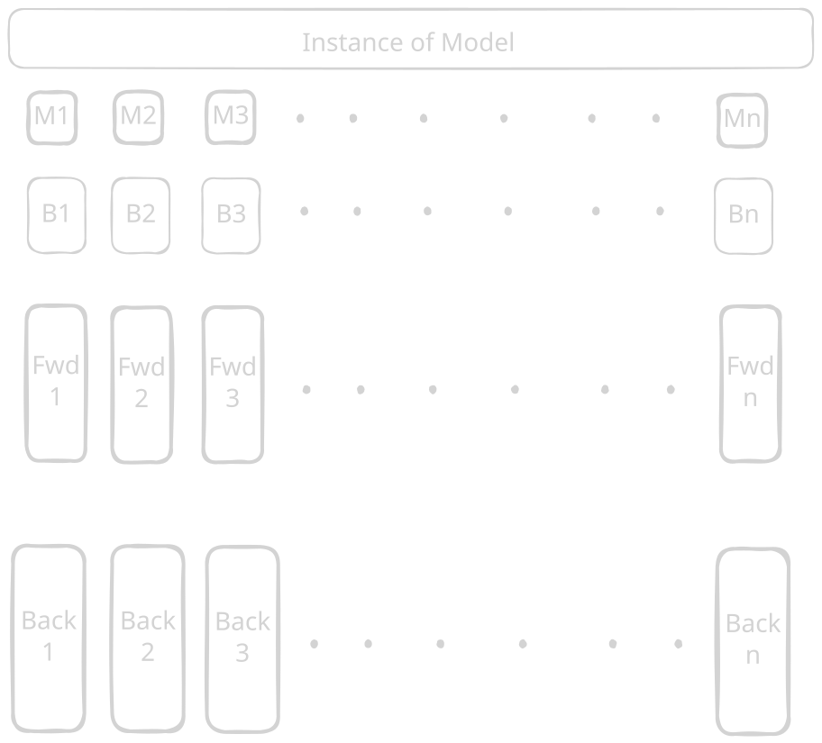
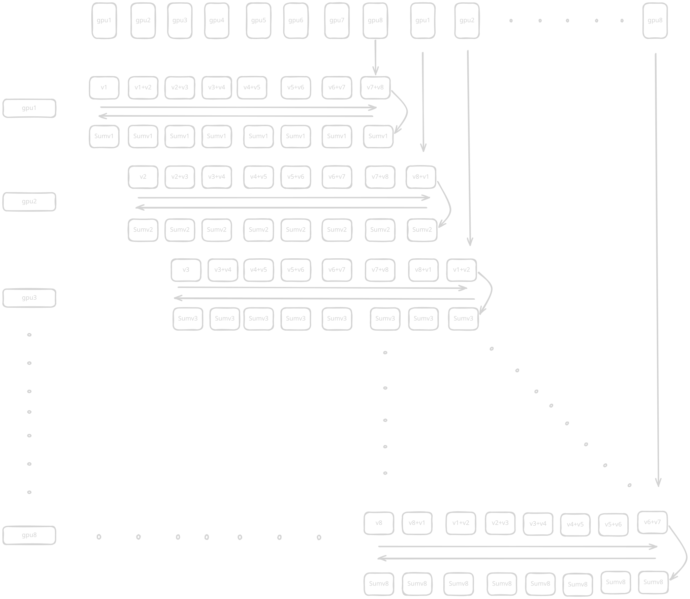
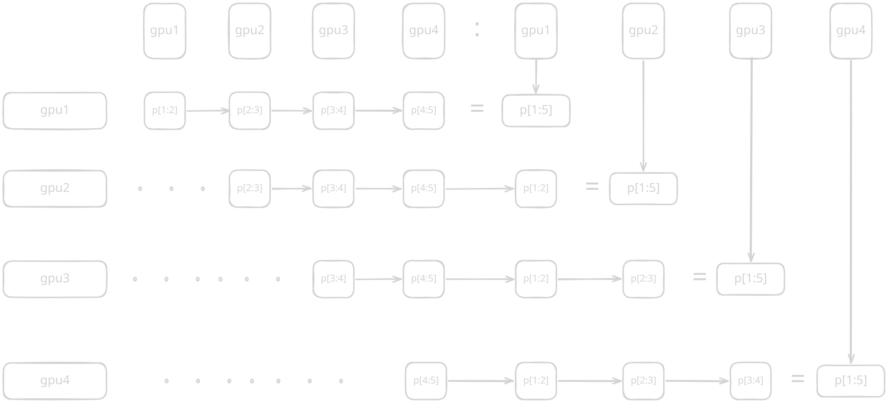
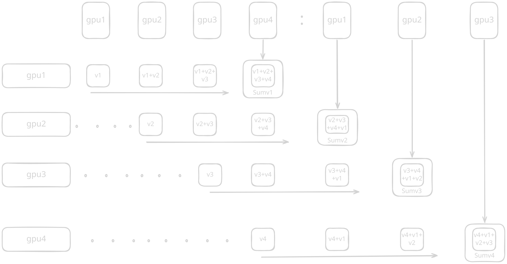
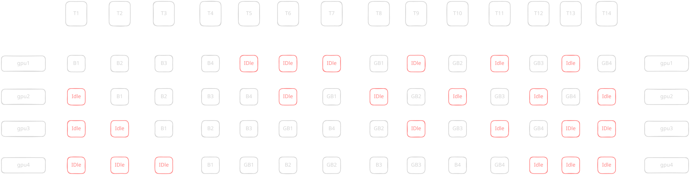
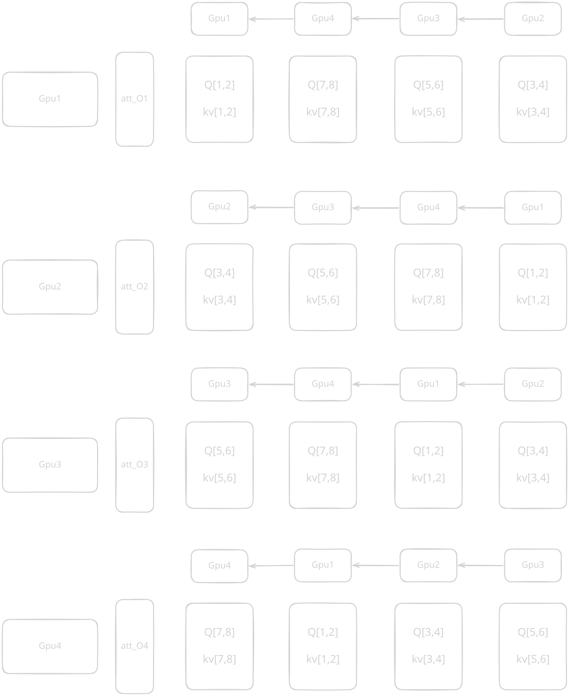
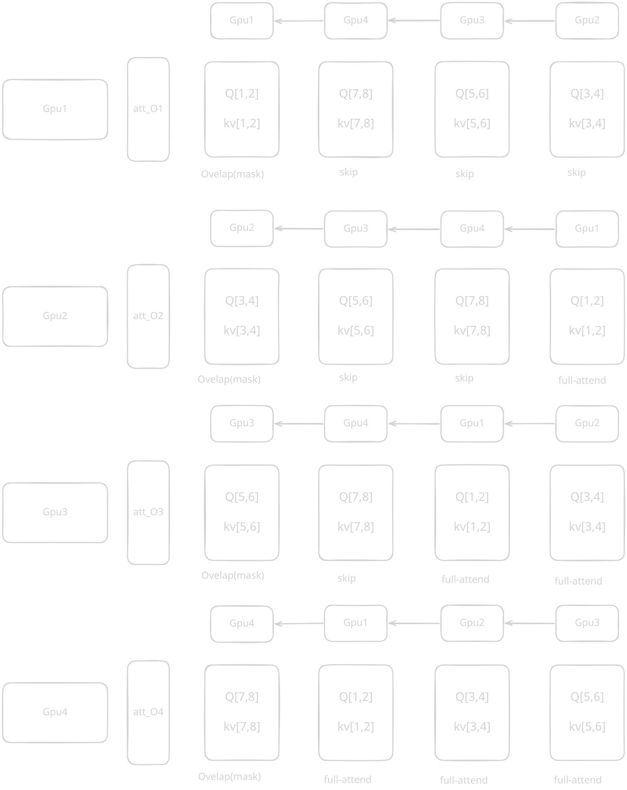

Distributive training in DL
In this research blog, we will go foundationally from how a cluster of GPUs together does deep learning, which is indeed quite different from deep learning being done on personal hardware and single-GPU setups.
Key principle is "make communication faster," "use less memory," while preserving lossless computation.
Geometry of MeshNode
In the most foundational sense, the important intuition is:
rank=5
physical:
node=1
local_rank=5
device=demo:rank5
batch=1024, layers = 24, tensor_dim = 16384
logical:
dp=1
pp=1
tp=1
groups:
dp_group=[1, 5]
pp_group=[5, 7]
tp_group=[4, 5]
ownership:
data_shard=1
layer_stage=1
tensor_shard=1
layers=[1, 12]
batch=[513, 1024]
tensor_dim_1=[8193, 16384]
The first thing to understand is Node, which contains multiple GPUs, generally 8, but could be more than that. So this set of 8 GPUs is connected to each other with NVLink and considered as one Node/Machine. So that means if we have 2 such Nodes, which have 8 GPUs each, then world_size is len(gpus), means 16, and one GPU holds one process, which we can say is Rank. Now inside one Node there are \([1,\ldots,8]\) GPUs, which is local_rank. These are some of the things we need to have intuition for.
So we have just device rank: \([1,\ldots,8]\), and from that single device rank we need to figure out coordinates for all the parallelism for that rank, also groups for each parallelism, and what part of model it owns. This is the most essential understanding of mesh geometry, which we need to get intuition for first; from that, it would be very easy to move deeper into each parallelism.
Okay, let's take an example that we have one Node that has 8 GPUs. So rank will be \([1,\ldots,N]\), which here is 8. Let's say we have implemented DataParallelism, PipelineParallelism, and TensorParallelism.
So let's say we have Dp_size = 2, PP_size = 2, and Tp_size = 2, since \(2 \times 2 \times 2 = 8\), which makes our one Node.
So we have device rank and size of our parallelism. From this we need to find out coordinates for it, which means just to see what part of data, layer, and tensor they own.
Let's say we have Rank: 1 means we want to see what parts
are being owned by GPU1.
Making things clear by our intuition first and
then we will translate into computational logic.
Let's have [B, T, D].
We will start by Tensor parallelism (we go reverse).
So we have Tp_size = 2, which means
in [B, T, D], D will be D // 2.
So if we have shape: 100,
then it would be:
- [1, 50] = [1, D / 2]
- [51, 100] = [D / 2 + 1, 2 * D / 2]
that means coordinate will be...
[Dp, Pp, 1]
[Dp, Pp, 2]
[Dp, Pp, 1]
[Dp, Pp, 2]
[Dp, Pp, 1]
[Dp, Pp, 2]
[Dp, Pp, 1]
[Dp, Pp, 2]
Next comes Pipeline parallelism.
So we have Pp_size = 2, and let's assume we have 8 layers.
layers // Pp_size = 4 means one GPU will own 4 layers.
Now let's update the Pp coordinate.
[Dp, 1, 1]
[Dp, 1, 2]
[Dp, 2, 1]
[Dp, 2, 2]
[Dp, 1, 1]
[Dp, 1, 2]
[Dp, 2, 1]
[Dp, 2, 2]
First four layers (1) are paired up with 1 part of tensor: [1, 1].
Again, four layers are paired up with 2 parts of tensor: [1, 2].
Same with later four layers:
- paired up with 1 part: [2, 1]
- paired up with 2 part: [2, 2]
So natural question is like: then why again doing that?
Answer is we have dp_size = 2,
means B // 2 will be split across 8 GPUs.
Hence it's like first four GPUs will have [1, B / 2] data and
last four GPUs will have [B / 2 + 1, B] data:
if B = 100 then [1, 50 (B / 2)] and [51 (B / 2 + 1), 100 (2 * B / 2)].
So for Dp it will be....
[1, 1, 1]
[1, 1, 2]
[1, 2, 1]
[1, 2, 2]
[2, 1, 1]
[2, 1, 2]
[2, 2, 1]
[2, 2, 2]
Now let's make it more thorough with a numerical example.
Let's have [50, T, 100]
means
25 batch: 1....4 GPUs
25 batch: 5....8 GPUs.
and 100 dim is
GPU1: [1, 50] dim
GPU2: [51, 100] dim
and again we have 8 layers
means:
- 4 layers: GPU1..4
- 4 layers: GPU5..8
this gives us
[[1..25], [1..4], [1..50]]
[[1..25], [1..4], [51..100]]
[[1..25], [5..8], [1..50]]
[[1..25], [5..8], [51..100]]
[[26..50], [1..4], [1..50]]
[[26..50], [1..4], [51..100]]
[[26..50], [5..8], [1..50]]
[[26..50], [5..8], [51..100]]
Those coordinates will make sense now but now we need to translate this in computational logic for finding coordinates given any rank.
Logic for finding coordinate is:
remaining = rank - 1
in reversed:
coordinate = (remaining % [parallelism]_size) + 1
remaining = remaining // [parallelism]_size
Let's say we have rank = 5
and dp_size = 1, pp_size = 4, tp_size = 2
makes:
remaining = rank - 1 = 4
so that will be...
in reversed:
Tp:
: coordinate = (4 % 2) + 1 = 1
: remaining = 4 // 2(tp_size) = 2
Tp_coord = coordinate = 1
remaining = 2
PP:
: coordinate = (2 % 4) + 1 = 3
: remaining is exhausted after 2 // 4
PP_coord = coordinate = 3
remaining is exhausted
Dp:
: coordinate = 1 because dp_size = 1
Dp_coord = coordinate = 1
Done.
We get [1, 3, 1]
means we have single data batch and
third layer stage of model in first part of tensor.
Now the first setup example will make sense to you:
batch=1024, layers = 24, tensor_dim = 16384
ownership:
data_shard=1
layer_stage=1
tensor_shard=1
layers=[1, 12]
batch=[513, 1024]
tensor_dim_1=[8193, 16384]
This is the geometry we need to have clear intuition for first. Knowing "where information lives" is foundational for distributive training.
Data Parallelism
In the simplest way, instead of having one model processing all data, each model will process different batches of data. Split data batches with same instance of model.

Question is if you have \(N\) instances of model, running on different batches with their own forward pass and backward pass, then we need to find a way of merging all these local gradients. So situation here we have is each model with local gradients, and we want that all of these \(N\) model gradients get merged and sent back to all GPUs. Answer to this problem is All-Reduce.
At the deepest level, the total loss of a batch \(B\) is simply the mathematical average of the loss for every individual sequence in that batch. Because differentiation is a linear operation, the gradient of the total batch is exactly equal to the average of the gradients of the micro-batches.
$$\nabla W_{\text{true}} = \frac{1}{N} \sum_{k=1}^{N} \nabla W_k$$
This mathematical equivalence makes Dparallelism inevitable. If we can get this averaged gradient onto every GPU, then every GPU will update its identical weights in the exact same way, and they will stay perfectly synchronized for the next step.
One more thing is when you initialize all these instances and weights_init are random, then they will explore very different manifolds in loss landscape. So we basically do Broadcast operation where we pick one GPU and send that weights_init copy to all other GPUs in parallel (which is a "one to many" operation and makes weights symmetrical).
For the answer of merging the learning, the most obvious thing that comes in mind is every other GPU sends gradient to one GPU, and it adds them up and broadcasts to all GPUs. But this naive (parameter-server) approach won't work because gradients are massive, and that's 100 GB of memory movement through NVLink from all GPUs to GPU1, which means catastrophic crash.
The elegant solution is all-reduce. Let's take an example where we have an 8-GPU cluster with its local 8-size gradient vector. So we open communication for this 8-length vector between 8 GPUs in a Node. So they can communicate all chunks in parallel. Now we basically add chunk to its most right neighbor and keep doing it.
gradient = [v1, ..., v8] in all 8 GPUs.
lane for v1: gpu1.v1 -> gpu2 (adds its v1) -> gpu3 (adds its v1) -> ... -> gpu8, ends with Sum_v1
lane for v2: gpu1.v2 -> gpu2 (adds its v2) -> gpu3 (adds its v2) -> ... -> gpu8, ends with Sum_v2
....
.
.
lane for v8: gpu1.v8 -> gpu2 (adds its v8) -> gpu3 (adds its v8) -> ... -> gpu8, ends with Sum_v8
Now we have Sum at GPU8. gradient = [Sum_v1, ..., Sum_v8]
So we broadcast this to all GPUs.
But as GPU8 will already have sum, we just need to divide by N to find mean.
And then move to its left neighbor and broadcast that value.
So that is now...
lane for v1: gpu8.Sum_v1 (just mean sum is there) -> gpu1 (broadcast and mean) -> gpu2 (broadcast and mean) -> ... -> gpu7 (broadcast and mean).
lane for v2: gpu8.Sum_v2 (just mean sum is there) -> gpu1 (broadcast and mean) -> gpu2 (broadcast and mean) -> ... -> gpu7 (broadcast and mean).
....
.
.
lane for v8: gpu8.Sum_v8 (just mean sum is there) -> gpu1 (broadcast and mean) -> gpu2 (broadcast and mean) -> ... -> gpu7 (broadcast and mean).
So all-reduce is:
- rotate ring clockwise and add value from previous index.
- rotate another time same in clockwise and broadcast values.
This is true working of the algorithm; just one tweak needed is load handling on all GPUs. Above you can see that GPU8 has all sums and broadcasts from there to all. But this is not what we want. We basically want that each GPU handles summed chunk of gradient and broadcasts. Below image perfectly illustrates this thing, where each GPU handles summed chunk and broadcasts to all.

Imagine the absolute smallest unit of our model: a single parameter, represented by a single floating-point number. If you have \(N\) GPUs, you have \(N\) different versions of this float (one local gradient on each GPU). To do a mathematical sum and ensure every GPU gets the final answer. So we can see we need two information movements. One is summation, and second one is spreading that information.
If you notice illustration, you'll find that when sum reached to its end GPU, it doesn't need to send anymore. Like GPU8 doesn't need to send sum forward but has complete sum, and this is the same with other GPUs. Now same with broadcasting phase, where again GPU8 sends the sum to GPU1...to..GPU7, not GPU8, because it already has that.
That means each GPU handles \(1/N\) chunk, and total movement saved is two \(1/N + 1/N = 2/N\). Subtracting that from total movement is \((2 - 2/N)\), which is \(2(N-1)/N\).
$$\lim_{N \to \infty} \frac{2(N-1)}{N} = 2$$ Now if we increase no matter how many GPUs, still it will be 2 compared to naive parameter-server approach which grows with number of GPUs.
Gradient bucket and Comp-comm overlap.
In standard Dparallel we do all-reduce after every layer means communication happens after each layer of gradient. Gradient bucket is a way to reduce the communication by storing gradients. We basically assign memory and then store gradient in it, when memory becomes full we do all-reduce on that bucket.
Computation-communication overlap is about preventing GPUs from going idle when process of communication happens. It's not like we are making math faster but we're hiding latency. So in naive way when all-reduce is happening GPU sits idle as communication is happening. So it looks like this.
compute grad_L3 (GPU cores busy)
all-reduce grad_L3 (GPU cores idle, waiting on network)
compute grad_L2 (GPU cores busy again)
all-reduce grad_L2 (GPU cores idle again)
compute grad_L1 (GPU cores busy)
all-reduce grad_L1 (GPU cores idle)
optimizer step
Idea is that when all-reduce is happening we already start computing another layer's gradient which is independent and we can compute without any dependency.
compute grad_L3 (compute cores busy)
|--- start all-reduce grad_L3 in background (network busy) ---|
compute grad_L2 (compute cores busy, AT THE SAME TIME as above)
|--- start all-reduce grad_L2 in background (network busy) ---|
compute grad_L1 (compute cores busy, while grad_L2's reduce still finishing)
|--- start all-reduce grad_L1 ---|
wait only if compute finishes before its corresponding communication finishes
optimizer step (needs ALL all-reduces done, including grad_L1's, before this can start)
We need to make sure that we start communication immediately when gradients are there, hence parameter hooking and buckets helps a lot. Thus firing quickly gives maximum overlap between computation and communication.
ZeRO
ZeRO is an optimization on standard Dparallelism. ZeRO basically shards the parameters, gradients, and optim_states across GPUs and computes only its shard. This gives us significant memory saving.
all_gather params -> COMMUNICATION 1: reconstruct full P for forward
forward
discard non-owned params -> back to N/8 P per GPU
all_gather params -> COMMUNICATION 2: reconstruct full P for backward
backward -> produces full local grad, size N, per GPU
reduce_scatter grads -> COMMUNICATION 3: sum AND shard in one pass, each GPU keeps only its grad slice
update owned param shard -> local computation, using owned grad shard + owned optimizer state shard
(this also gives you the freshly-updated owned param shard, no extra step needed
since the GPU that owns this param shard is the one that just updated it)
When shard of parameter happens then for doing forward we need all params so we do all-gather and then again keep only shard params and discard others. Backward pass again needs all parameters so one more all-gather and then we compute gradient and free up memory by discarding. We do reduce-scatter instead of all-reduce. Reduce-scatter does make local gradient global but gives shard of it. All-reduce gives full copy and becomes memory intensive here.
x/N: x chunk over N GPUs.
all-reduce, full N, then discard x/N:
total movement: 2(N-1)/N full-vector-equivalents (the full all-reduce cost)
redundancy: most of the all-gather half, since you discard x/N of what arrives.
reduce_scatter only:
total movement: (N-1)/N full-vector-equivalents (roughly half of all-reduce's cost)
no redundancy: every GPU only ever receives exactly the slice it's going to keep.
This is ZeRO-3 which we discussed, the difference in ZeRO-1, ZeRO-2 and ZeRO-3 is sharding. ZeRO-1 has only optim_states sharding while ZeRO-2 shards optim_states and gradients and then ZeRO-3 shards all three: parameters, gradients, and optim_states.
All-gather
We have partial parameters and we need full copy of all parameters across all GPUs. All-gather solves this. It's second part of all-reduce: "we have summed value then we broadcast through one more rotation across N GPUs." Illustration: every GPU has split of parameters and then it sends to its neighbor GPU where every GPU ends up with full copy of parameter.

Reduce-scatter
Reduce-scatter is basically summing values by adding up with neighbor GPUs. It's one ring rotation where every GPU will have chunk of the summed vector.

FSDP (Fully Sharded Data Parallelism)
The difference between ZeRO-3 and FSDP is ZeRO-3 is model level and FSDP is layer level. So FSDP also shards params, gradients, optim_states but it does on each layer. So each GPU is holding slice of param, gradient, optim_state from all layers. Conclusively FSDP is just applied at finer granularity (once per layer, instead of once per whole model), which means the peak memory at any instant is only "one layer's worth of full parameters," not "the whole model's worth."
forward pass, FSDP style:
all_gather layer1 params -> compute layer1 forward -> discard layer1 non-owned shards
all_gather layer2 params -> compute layer2 forward -> discard layer2 non-owned shards
all_gather layer3 params -> compute layer3 forward -> discard layer3 non-owned shards
...
all_gather layerN params -> compute layerN forward -> discard layerN non-owned shards
this means communication also gets increased, which is a tradeoff for saving memory.
forward pass:
layer1: all_gather params -> compute -> discard
layer2: all_gather params -> compute -> discard
...
layerK: all_gather params -> compute -> discard
backward pass:
layerK: all_gather params -> compute grad -> reduce_scatter grad -> discard params
...
layer1: all_gather params -> compute grad -> reduce_scatter grad -> discard params
Tensor Parallelism
In linear layer Y = x @ w the size of matrices can hold many GBs of VRAM alone so Tensor parallelism is about sharding such matrices. In Tensor Parallelism we want to make sure that GPUs are contiguous when Tparallelism is done as communication operation happens multiple times in forward and backward layers. Thus cost of latency can become a bottleneck itself.
First way of TP is ColumnParallel. Idea is splitting columns of weight matrices and replicating X on multiple GPUs, which will give us partial Y output. This parallelism requires All-gather operation across all partial Y outputs.
X: full copy on every GPU, shape [batch, in_features]
W split by columns: W1, W2, W3, W4, each shape [in_features, out_features/4]
GPU1: Y1 = X @ W1 -> shape [batch, out_features/4]
GPU2: Y2 = X @ W2 -> shape [batch, out_features/4]
...
GPU4: Y4 = X @ W4 -> shape [batch, out_features/4]
all-gather(Y1, Y2, Y3, Y4)
Second way we can do TP is RowParallel. Instead of splitting columns of W matrix we shard its rows. But if we split its rows then shape mismatch will be there as X needs to match its outer[-1] shape to it. So column parallelism on X becomes inevitable hence we pair ColumnParallel of X to RowParallel of W.
X split by columns: X1, X2, X3, X4, each shape [batch, in_features/4]
W split by rows: W1, W2, W3, W4, each shape [in_features/4, out_features]
GPU1: Y_partial_1 = X1 @ W1 -> shape [batch, out_features]
GPU2: Y_partial_2 = X2 @ W2 -> shape [batch, out_features]
...
GPU4: Y_partial_4 = X4 @ W4 -> shape [batch, out_features]
all-reduce(Y_partial_1, Y_partial_2, ..., Y_partial_4)
Here we do all-reduce just at the end. Pairing Column with RowParallel saves a lot of communication as we do one all-reduce at the end. In ColumnParallel we need all-gather multiple times.
Tp in MLP
TP at MLP is almost the same as the above foundation of TP in Linear.
H = GELU(X @ W1) first linear, expands in_features -> 4x hidden
Y = H @ W2 second linear, contracts back down to in_features
We need to apply ColumnParallel at W1 and W2 will be RowParallel.
GPU1: H1 = GELU(X @ W1_col1) -> complete slice of H, shape [batch, hidden/4]
GPU2: H2 = GELU(X @ W1_col2) -> complete slice of H, shape [batch, hidden/4]
...
GPU4: H4 = GELU(X @ W1_col4) -> complete slice of H, shape [batch, hidden/4]
Good thing is for GELU computation we do not need communication.
We just need to apply elementwise across all H's.
GPU1: Y_partial1 = H1 @ W2_row1 -> partial sum, full shape [batch, in_features]
GPU2: Y_partial2 = H2 @ W2_row2 -> partial sum, full shape [batch, in_features]
...
GPU4: Y_partial4 = H4 @ W2_row4 -> partial sum, full shape [batch, in_features]
all_reduce(Y_partial1...4) -> final correct Y
TP in Attention.
TP in attention is more subtle. We split each head of attention on different GPUs.
GPU1: owns heads 1-2 entirely (their own Q, K, V projections, full attention computation for those heads)
GPU2: owns heads 3-4 entirely
GPU3: owns heads 5-6 entirely
GPU4: owns heads 7-8 entirely
as each head is independent of another, we need no communication here.
GPU1: attn_out_heads1-2 -> complete slice, shape [batch, seq, 2*head_dim]
GPU2: attn_out_heads3-4 -> complete slice
...
GPU4: attn_out_heads7-8 -> complete slice, shape [batch, seq, 2*head_dim]
then for output projection we just use RowParallel with attention output with ColumnParallel.
GPU1 holds: W_O rows for heads1-2, shape [2*head_dim, model_dim]
GPU2 holds: W_O rows for heads3-4, shape [2*head_dim, model_dim]
GPU3 holds: W_O rows for heads5-6, shape [2*head_dim, model_dim]
GPU4 holds: W_O rows for heads7-8, shape [2*head_dim, model_dim]
now matmul:
GPU1: Y_partial1 = attn_out_heads1-2 @ W_O_rows1-2 -> shape [batch, seq, model_dim]
GPU2: Y_partial2 = attn_out_heads3-4 @ W_O_rows3-4 -> shape [batch, seq, model_dim]
GPU3: Y_partial3 = attn_out_heads5-6 @ W_O_rows5-6 -> shape [batch, seq, model_dim]
GPU4: Y_partial4 = attn_out_heads7-8 @ W_O_rows7-8 -> shape [batch, seq, model_dim]
all_reduce(Y_partial1, Y_partial2, Y_partial3, Y_partial4) -> final correct attention block output
Pipeline Parallelism
Pipeline parallelism is about sharding entire layers across multiple GPUs. Sharding layers across GPUs invites bubble problem (GPU idleness state while PP is performed).
model has layers: L1, L2, L3, L4, L5, L6, L7, L8
GPU1 holds: L1, L2 (stage 1)
GPU2 holds: L3, L4 (stage 2)
GPU3 holds: L5, L6 (stage 3)
GPU4 holds: L7, L8 (stage 4)
forward pass for one batch:
GPU1 computes L1, L2 -> sends activation to GPU2
GPU2 computes L3, L4 -> sends activation to GPU3
GPU3 computes L5, L6 -> sends activation to GPU4
GPU4 computes L7, L8 -> produces final output, loss computed here
backward pass for one batch:
GPU4 computes gradients for L8 then L7 -> GPU3 computes L6 then L5 -> GPU2 computes L4 then L3 -> GPU1 computes L2 gradients and finally L1.
as next layer needs the previous layer's output this sequentiality causes Bubble.
time: 1 2 3 4
GPU1: [L1,L2] idle idle idle
GPU2: idle [L3,L4] idle idle
GPU3: idle idle [L5,L6] idle
GPU4: idle idle idle [L7,L8]
at any given time 3 GPUs are sitting idle.
This is naive PipelineParallelism and to prevent this bubble, we create microbatches instead of passing single global batch, which is called GPipe optimization.
time: 1 2 3 4 5 6 7
GPU1: [mb1] [mb2] [mb3] [mb4] idle idle idle
GPU2: idle [mb1] [mb2] [mb3] [mb4] idle idle
GPU3: idle idle [mb1] [mb2] [mb3] [mb4] idle
GPU4: idle idle idle [mb1] [mb2] [mb3] [mb4]
we reduced the bubble but still we have a startup bubble (top-left, before the pipe fills up) and a drain-down bubble (bottom-right, after the last micro-batch enters).
Using more microbatches helps to reduce this bubble time.
One more loophole is even if gradients are available we do not compute them and wait for all microbatches to get finished first. But we do not need to wait and in this optimization 1F1B (1 Forward 1 Backward) is born.
we can see that at time 4 GPU4 can compute B1 and then in FIFO (first in first out) manner we compute one forward and one backward.
Time: 1 2 3 4 5 6 7 8 9 10 11 12 13 14
---------------------------------------------------------------------------------------------------------
GPU1: [F1] [F2] [F3] [F4] idle idle idle [B1] idle [B2] idle [B3] idle [B4]
GPU2: idle [F1] [F2] [F3] [F4] idle [B1] idle [B2] idle [B3] idle [B4] idle
GPU3: idle idle [F1] [F2] [F3] [B1] [F4] [B2] idle [B3] idle [B4] idle idle
GPU4: idle idle idle [F1] [B1] [F2] [B2] [F3] [B3] [F4] [B4] idle idle idle

Benefit of F1B1 comes with memory, not speedup time, because now every GPU does not need to store activation for all batches and memory can be freed up.
On top of the 1F1B there is one more optimization, which is interleaved parallelism. Megatron uses Interleaved-1F1B in Pparallel. We just want that GPU to do more work so we assign non-contiguous chunks instead of one contiguous chunk to it.
Instead of model holding one global contiguous chunk...
GPU1 holds: L1, L2, L3, L4 (stage 1)
GPU2 holds: L5, L6, L7, L8 (stage 2)
GPU3 holds: L9, L10, L11, L12 (stage 3)
GPU4 holds: L13, L14, L15, L16 (stage 4)
interleaved assigns non-contiguous small chunks.
GPU1 holds: L1, L2, L9, L10 (stage 1)
GPU2 holds: L3, L4, L11, L12 (stage 2)
GPU3 holds: L5, L6, L13, L14 (stage 3)
GPU4 holds: L7, L8, L15, L16 (stage 4)
More work per GPU fills Pipeline faster and reduces bubble. Means better utilization of the same hardware. Same work, less idle time in between: "more work per GPU".
Context Parallelism
Problem is when you have longer token sequence which does not fit in one GPU memory.
It's splitting token sequence [B, T/cp_size, D] across GPUs. Now MLP and linear cases are straightforward but attention needs all KV blocks as each key needs to attend all KV. Naive approach is all-gather but we again are trying to fit large memory.
Solution for this is ring attention.
step 1 (start):
GPU1 has Q[1,2], K[1,2], V[1,2]
GPU2 has Q[3,4], K[3,4], V[3,4]
GPU3 has Q[5,6], K[5,6], V[5,6]
GPU4 has Q[7,8], K[7,8], V[7,8]
step 1:
each GPU computes attention between its own Q and its currently-held K,V chunk
simultaneously each GPU sends its K,V chunk to its right neighbor
GPU1: compute attn(Q[1,2], K[1,2], V[1,2]) -> partial result A1
send K[1,2],V[1,2] to GPU2
receive K[7,8],V[7,8] from GPU4
GPU2: compute attn(Q[3,4], K[3,4], V[3,4]) -> partial result A2
send K[3,4],V[3,4] to GPU3
receive K[1,2],V[1,2] from GPU1
GPU3: compute attn(Q[5,6], K[5,6], V[5,6]) -> partial result A3
send K[5,6],V[5,6] to GPU4
receive K[3,4],V[3,4] from GPU2
GPU4: compute attn(Q[7,8], K[7,8], V[7,8]) -> partial result A4
send K[7,8],V[7,8] to GPU1
receive K[5,6],V[5,6] from GPU3
step 2:
each GPU now has a new K,V chunk from its neighbor
compute attention against that new chunk, accumulate on top of step 1's result
GPU1: compute attn(Q[1,2], K[7,8], V[7,8]) -> accumulate into A1
send K[7,8],V[7,8] to GPU2
receive K[5,6],V[5,6] from GPU4
GPU2: compute attn(Q[3,4], K[1,2], V[1,2]) -> accumulate into A2
...
step 3: same pattern, new chunk arrives, compute and accumulate
step 4: final chunk arrives, compute and accumulate
after step 4:
GPU1's A1 = attention output for tokens 1,2 against ALL 8 tokens' K,V -- correct and complete
GPU2's A2 = attention output for tokens 3,4 against ALL 8 tokens' K,V -- correct and complete
...
GPU4's A4 = attention output for tokens 7,8 against ALL 8 tokens' K,V -- correct and complete
naive all-gather attention:
memory: every GPU holds full K,V for entire sequence simultaneously -- O(seq^2) per GPU
compute: same
communication: all-gather upfront, then compute
ring attention:
memory: every GPU holds only ONE K,V chunk at a time -- O(seq^2 / N) per GPU
compute: same total, just done in N steps
communication: N-1 point-to-point K,V chunk passes, overlapped with compute
Just like flash attention, we need to manage a few variables which we update after each step.
compute raw scores:
s1 = q1 @ k1^T / sqrt(d)
s2 = q1 @ k2^T / sqrt(d)
initialize running variables:
m = -inf
d = 0
o = zeros
update running max:
m_new = max(-inf, s1, s2) = max(s1, s2) call this m1
compute exponentials (stabilized by subtracting m1):
e1 = exp(s1 - m1)
e2 = exp(s2 - m1)
update running sum and weighted value sum:
d = e1 + e2
o = e1*v1 + e2*v2
after step 1:
m = m1
d = e1 + e2
o = e1*v1 + e2*v2
update as new chunk K[7,8], V[7,8] arrives.
compute new raw scores:
s7 = q1 @ k7^T / sqrt(d)
s8 = q1 @ k8^T / sqrt(d)
update running max:
m_new = max(m1, s7, s8) call this m2
-- m2 might be larger than m1 if tokens 7,8 have higher scores
THIS IS THE KEY UPDATE STEP:
the old exponentials e1, e2 were computed relative to m1
but now the global max is m2, so they need to be rescaled
rescale factor = exp(m1 - m2)
-- if m2 > m1, this factor is < 1, shrinking the old values
-- if m2 == m1, this factor is 1, nothing changes
update d and o to reflect the new global max:
d = d * exp(m1 - m2) + exp(s7 - m2) + exp(s8 - m2)
^-- rescale old ^-- add new chunk's contributions
o = o * exp(m1 - m2) + exp(s7 - m2)*v7 + exp(s8 - m2)*v8
^-- rescale old ^-- add new chunk's contributions
m = m2
after step 2:
m = m2
d = exp(s1-m2) + exp(s2-m2) + exp(s7-m2) + exp(s8-m2)
o = exp(s1-m2)*v1 + exp(s2-m2)*v2 + exp(s7-m2)*v7 + exp(s8-m2)*v8

But this is standard ring attention. What about causal one? For causal attention, rules are simple:
K,V chunk entirely BEFORE Q chunk -> full attention, no mask, compute normally
K,V chunk entirely AFTER Q chunk -> skip entirely, zero contribution
K,V chunk OVERLAPS with Q chunk -> partial causal mask, compute with masking
GPU1: Q[1,2] vs K,V[1,2] -> OVERLAP (same chunk)
token 1 can see token 1 only (token 2 is future)
token 2 can see tokens 1,2
-> compute with partial causal mask, update m,d,o
GPU2: Q[3,4] vs K,V[3,4] -> OVERLAP
token 3 sees token 3 only
token 4 sees tokens 3,4
-> compute with partial causal mask, update m,d,o
GPU3: Q[5,6] vs K,V[5,6] -> OVERLAP
-> compute with partial causal mask
GPU4: Q[7,8] vs K,V[7,8] -> OVERLAP
-> compute with partial causal mask
simultaneously: each GPU sends its K,V chunk one step clockwise
GPU1 sends K,V[1,2] to GPU2
GPU2 sends K,V[3,4] to GPU3
GPU3 sends K,V[5,6] to GPU4
GPU4 sends K,V[7,8] to GPU1
compressing this across space-time is
K,V[1,2] K,V[3,4] K,V[5,6] K,V[7,8]
GPU1: overlap(mask) skip skip skip
GPU2: full overlap(mask) skip skip
GPU3: full full overlap(mask) skip
GPU4: full full full overlap(mask)

Expert Parallelism
In MoE model structure experts can be too large to fit in GPU memory. Expert Parallelism is about sharding experts across multiple GPUs. This becomes something like this:
four GPUs and 32-expert Eparallelism will look like:
GPU1: expert 1, expert 2, ..., expert 8
GPU2: expert 9, expert 10, ..., expert 16
GPU3: expert 17, expert 18, ..., expert 24
GPU4: expert 25, expert 26, ..., expert 32
Problem is tokens are distributed across GPUs. But if router selects an expert which lives on different GPU then token needs to travel to that GPU for attending the expert. So to send and receive this token we need All-to-All communication.
For example:
4 GPUs, 4 tokens, 4 experts, one per GPU:
GPU1: holds t1, owns expert1
GPU2: holds t2, owns expert2
GPU3: holds t3, owns expert3
GPU4: holds t4, owns expert4
Router decides which expert it should go for.
GPU1's router: t1 -> expert3 (send t1 to GPU3)
GPU2's router: t2 -> expert1 (send t2 to GPU1)
GPU3's router: t3 -> expert4 (send t3 to GPU4)
GPU4's router: t4 -> expert1 (send t4 to GPU1)
All-to-all: every GPU simultaneously sends and receives tokens through NCCL communication.
GPU1: sends t1 to GPU3, receives t2 from GPU2, receives t4 from GPU4
GPU2: sends t2 to GPU1, receives nothing else
GPU3: sends t3 to GPU4, receives t1 from GPU1
GPU4: sends t4 to GPU1, receives t3 from GPU3
once communication is done:
GPU1: has t2, t4 -> runs expert1 on t2 and t4
GPU2: has nothing -> expert2 sits idle this step (load imbalance)
GPU3: has t1 -> runs expert3 on t1
GPU4: has t3 -> runs expert4 on t3
local expert computation (no communication required).
GPU1: expert1(t2) -> output_t2, expert1(t4) -> output_t4
GPU2: nothing
GPU3: expert3(t1) -> output_t1
GPU4: expert4(t3) -> output_t3
running All-to-all again:
GPU1: sends output_t2 back to GPU2 (t2's original home)
sends output_t4 back to GPU4 (t4's original home)
receives output_t1 from GPU3 (t1's original home is GPU1)
GPU2: receives output_t2 from GPU1
GPU3: sends output_t1 to GPU1
receives output_t3 from GPU4
GPU4: sends output_t3 to GPU3
receives output_t4 from GPU1
which looks like after combine:
GPU1: has output_t1 <- t1's journey: GPU1 -> GPU3 (expert3) -> GPU1
GPU2: has output_t2 <- t2's journey: GPU2 -> GPU1 (expert1) -> GPU2
GPU3: has output_t3 <- t3's journey: GPU3 -> GPU4 (expert4) -> GPU3
GPU4: has output_t4 <- t4's journey: GPU4 -> GPU1 (expert1) -> GPU4
Thing to notice is All-to-all does not have any ring topological algorithm. So it's costly compared to operations like All-Reduce or All-gather.
This will be helpful: distributive-training-lab